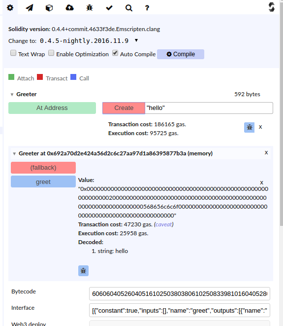

We will be using the online solidity compiler, I will look at other IDEs such as Truffle later
I have picked this as it is quite simple when you are starting out
The online compiler has a runtime that allows some limited testing against an in memory blockchain in the browser, we shall see how to deploy to a real block chain later.
Solidity Compiler and RuntimeOpen this in a browser, it starts with a default contract called Ballot, close the tab containing this.
Click the green new page icon to create a new contract and paste the greeter code given above into the tab.
Click on the tab label that says untitled, to rename the tab to Greeter.sol
You should then have something like this
At the right of the screen we can see the result of the compiled contract

Typically you won't need to use the bytecode, but you will need to use the Interface and Web3 deploy information if you are deploying to a real block chain
If you know Javascript / Java / C then Solidity should look familiar, the langauge itself is not difficult, the work lies in how to create an app that is suitable for the block chain.
You will see that we have a variable called greeting of type string, and 2 functions.
The function greeter, having the same name as the function will run when the contract is created, similar to constructors in object oriented languages
The function greet provides the functionality of the contract.
function greet() constant returns (string) {
return greeting;
}
We are still working within the browser with an in memory blockchain, so lets deploy our simple contract to that
our constructor takes one argument the greeter string, so we need to supply that in the box, and click the create button
after a short time (during which you may see a "waiting to be mined message") you will see the deployed contract

The points to note are :